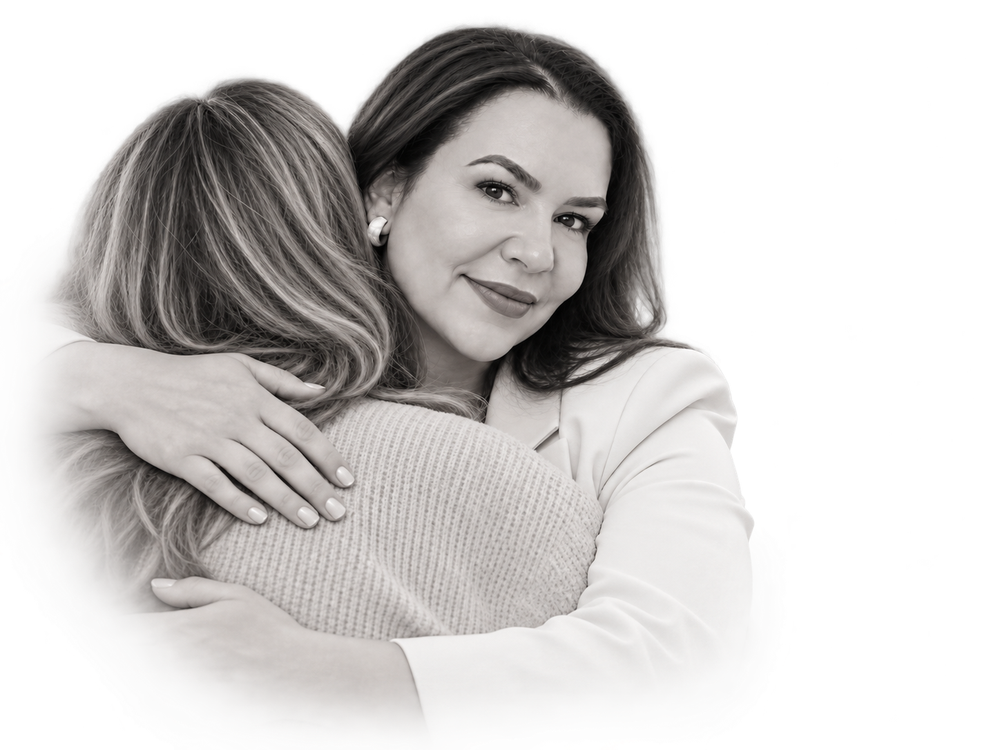

A mente não desacelera
As preocupações ocupam o dia, o estresse se acumula e encontrar um momento de tranquilidade parece difícil.
Com a Psicóloga Letícia Nogueira Aragão, com quase 20 anos de experiência, cada pessoa é acolhida com escuta qualificada e ética. Atenção individualizada, respeito à sua história e estratégias fundamentadas para você compreender o que vive e encontrar mais equilíbrio e bem-estar.
Quero agendar meu atendimentoTalvez você reconheça algumas destas situações em si ou em alguém da sua família.
As preocupações ocupam o dia, o estresse se acumula e encontrar um momento de tranquilidade parece difícil.
Tristeza, desânimo, autocrítica ou emoções intensas afetam a maneira como você se vê e vive sua rotina.
Conflitos, dificuldade para se expressar ou preocupações com o desenvolvimento de um filho trazem dúvidas para a família.
Às vezes, é difícil até explicar o que está acontecendo. Você pode começar justamente por essa dificuldade. O atendimento psicológico é um espaço para falar sobre o que sente, compreender sua história e trabalhar questões que afetam sua saúde mental e sua qualidade de vida.
Quero saber como começarVocê não precisa chegar com as palavras certas ou com todas as respostas. O ponto de partida pode ser aquilo que hoje está difícil de entender ou de enfrentar.
Com Letícia, sua história é acolhida com escuta qualificada, ética e sigilo profissional. O acompanhamento considera suas necessidades e utiliza estratégias fundamentadas em conhecimentos científicos e práticas psicológicas reconhecidas.
O objetivo é favorecer o autoconhecimento e ampliar seus recursos para lidar com emoções, relações e desafios do dia a dia, respeitando seu ritmo.

Uma criança, um adolescente e um adulto podem expressar suas dificuldades de maneiras diferentes. Por isso, o cuidado considera tanto a demanda quanto o momento de vida de quem é atendido.
Letícia também acompanha crises emocionais e sintomas depressivos, entre outras questões de saúde mental. Converse sobre a sua busca ou sobre o cuidado de alguém da sua família.
Escolher uma psicóloga também é conhecer como ela trabalha e o que sustenta sua prática.
O cuidado começa com espaço para a sua história.
Consultar horários com a LetíciaPsicóloga | CRP 04/26390
Letícia Nogueira Aragão é psicóloga, formada em dezembro de 2006 e em atuação desde janeiro de 2007. Seu trabalho reúne escuta qualificada, conhecimento científico e atenção às necessidades de cada pessoa.
Possui formação e especializações em Psicologia Cognitivo-Comportamental, Neuropsicologia, Análise do Comportamento Aplicada (ABA) e Psicologia Criminal e Forense, além de especialização em Equoterapia e atuação em avaliações psicotécnicas.
Essa trajetória se reflete em uma prática que abrange acompanhamento psicológico, avaliações, elaboração de documentos técnicos e recursos administrativos na esfera jurídica relacionados à Psicologia.
Para quem procura atendimento, o compromisso é o mesmo: acolher com ética, sigilo e respeito à sua singularidade.
Conheça os serviços que fazem parte da atuação profissional de Letícia.
Atendimento em Belo Horizonte e on-line, considerando as necessidades individuais de cada pessoa.
Encontros presenciais em Belo Horizonte para o cuidado com a saúde mental.
Acolhimento em cada faseEntre em contato pelo WhatsApp para conversar sobre sua demanda, confirmar o endereço e consultar os horários disponíveis.
Uma modalidade de atendimento psicológico a distância, com acolhimento e escuta.
Cuidado com a sua singularidadeConverse com Letícia sobre o atendimento on-line e receba as informações para organizar o seu encontro.
Entre em contato com Letícia pelo WhatsApp para tirar dúvidas e saber mais sobre o atendimento.
Envie uma mensagem para (32) 98804-2418 e manifeste seu interesse no atendimento.
Informe se você busca acompanhamento psicológico, uma avaliação ou outro serviço.
Pergunte sobre o atendimento presencial em Belo Horizonte ou o atendimento on-line.
Converse sobre o funcionamento do atendimento e as informações necessárias para começar.
Consulte a disponibilidade e confirme diretamente pelo WhatsApp a data do seu encontro.
Um espaço de acolhimento, escuta e respeito às suas necessidades individuais.
Letícia atende crianças, adolescentes, adultos e idosos, considerando as necessidades individuais de cada pessoa e as particularidades de cada fase da vida.
São realizadas as duas modalidades: presencialmente em Belo Horizonte e on-line. Entre em contato para conversar sobre sua demanda e consultar a disponibilidade.
Ansiedade, estresse, crises emocionais, sintomas depressivos, autoestima, dificuldades de relacionamento e desenvolvimento infantil e adolescente, entre outras questões que afetam a saúde mental e a qualidade de vida.
Sim. Sua prática inclui avaliações psicológicas e neuropsicológicas, além da atuação na área de avaliações psicotécnicas. Pelo WhatsApp, você pode apresentar a finalidade da avaliação e esclarecer suas dúvidas.
Letícia é psicóloga, CRP 04/26390, formada desde dezembro de 2006 e em atuação desde janeiro de 2007. Possui formação e especializações em Psicologia Cognitivo-Comportamental, Neuropsicologia, ABA, Psicologia Criminal e Forense e Equoterapia.
Envie uma mensagem pelo WhatsApp (32) 98804-2418 para saber sobre a disponibilidade, as modalidades e as informações para o atendimento.
Atendimento presencial em Belo Horizonte e on-line.
Atendimento psicológico presencial
Psicóloga | CRP 04/26390
Entre em contato para confirmar o endereço e os horários disponíveis.
(32) 98804-2418Agendar atendimento presencialAcolhimento, escuta e cuidado a distância
Psicóloga | CRP 04/26390
Converse sobre sua demanda e receba as informações para o atendimento on-line.
(32) 98804-2418Agendar atendimento on-line